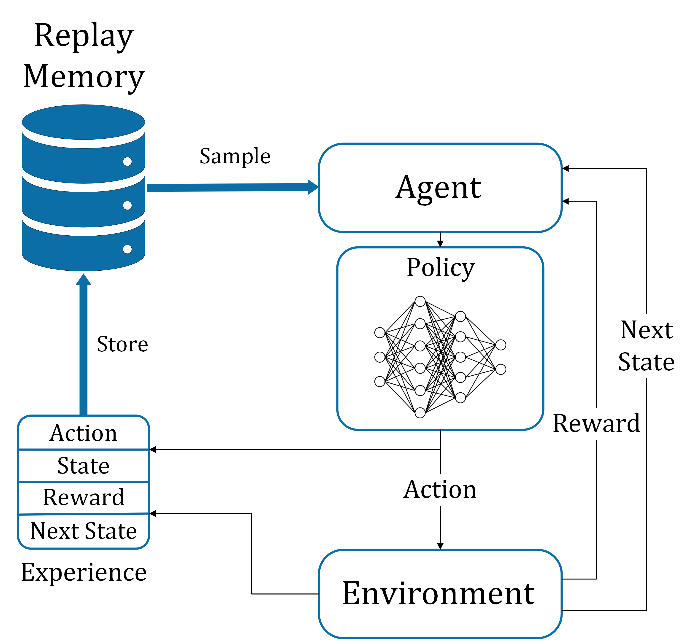
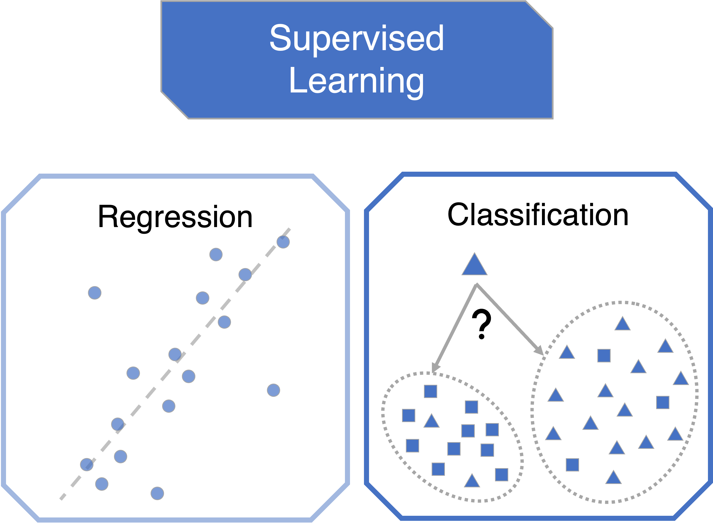
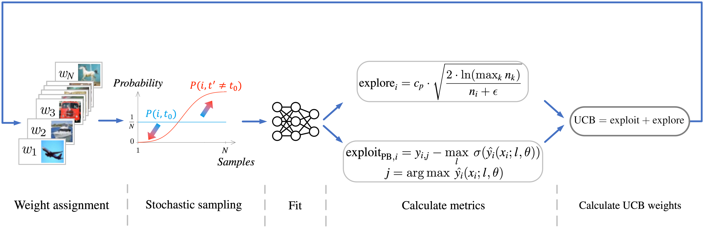
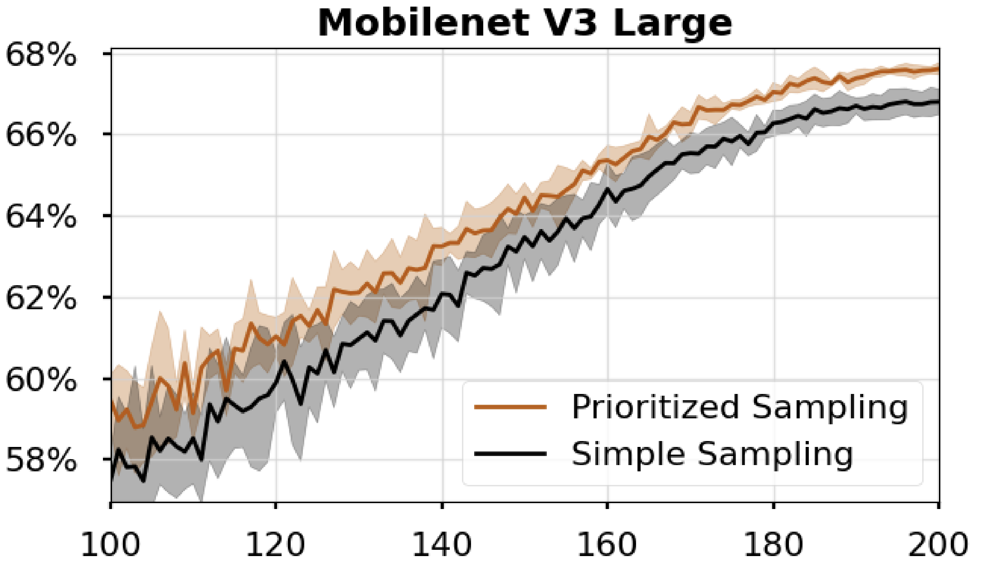
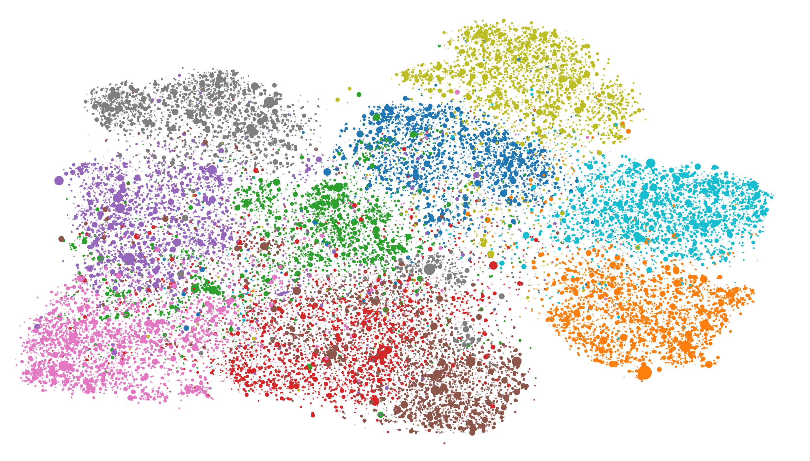

The effectiveness of deep learning models is strongly influenced by the quality of training data. Traditional training approaches assume that all samples contribute equally to the learning process, leading to uniform data sampling. However, this assumption does not account for the varying informational content of different samples. This paper presents a novel data prioritization method for object detection that dynamically adjusts the sampling probability of training data based on its relevance. Focusing on object detection applications within the computer vision field, the proposed methodology introduces the Relative Detection Error metric to evaluate and prioritize samples during training. By selecting data points with higher informational value, our approach improves both classification and localization accuracy while maintaining minimal computational overhead. The method is demonstrated using YOLO architectures on diverse datasets, showcasing its ability to generalize across different settings. Experimental results indicate that prioritizing high-value samples enhances the F1 score and mean Average Precision (mAP), leading to more efficient training and robust performance.

Soon
Soon
Soon
Soon
Soon

Soon
Soon

Soon


Soon
Please use this BibTeX in case you would like to cite our work in your publications:
@article{,
author = {Balogh, Csan{\'a}d L. and Pap, Bence Szil{\'a}rd and K{\H o}v{\'a}ri, B{\'a}lint and B{\'e}csi, Tam{\'a}s},
title = {Smarter Sampling: Data Prioritization for Improved Object Detection},
journal = {},
volume = {},
number = {},
pages = {},
year = {},
}